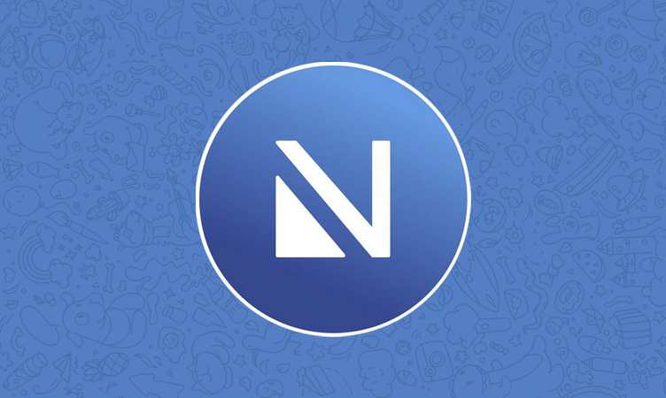

一个 Telegram 折腾党的深夜救星：Nicegram 如何把我从切号地狱里捞出来
同时挂着日常、工作、爬虫测试三个 Telegram 账号，官方客户端只能同时登俩还切得慢如蜗牛——直到朋友甩来一个叫 Nicegram 的 iOS/Android 双端 Telegram 增强客户端。
那天凌晨一点，我对着手机屏幕发了三分钟的呆。
官方 Telegram 的侧边栏里，一个"正在切换账号"的加载圈就像一个永远不会停的走马灯——我等它转了快两分钟，还是没把我那个爬虫测试号拉出来。主力日常号要跟女朋友聊天，工作号要跟进跨境项目的日报，测试号还要盯一个刚上线的关键词抓取 bot 的心跳。三个号像三个等着我救火的小孩，但 Telegram 一次只能抱两个在怀里，第三个要么强制下线、要么继续转圈。
这不是我第一次骂它了。官方客户端对多账号的支持一直是半吊子——最多同时登三个但切换慢，账号列表排序固定改不了，而且 iOS 版还有一堆敏感内容墙挡着，某些频道点进去就是"此内容无法显示"。代理设置页更是堆满了代理提供者的横幅广告，每次调节点都要在五颜六色的 banner 里找开关。
那天我忍不住在一个 Telegram 折腾群组里吐槽："有没有能让我同时挂五个号、切起来像翻书一样快、还能把不想让别人看见的号藏起来的客户端？"
群里一个叫老 K 的老哥甩来一个链接："你说的这些，Nicegram 全都有。"
第一次装 Nicegram 那天
我对第三方 Telegram 客户端一直挺谨慎的——毕竟涉及聊天数据和账号安全，不敢随便装来路不明的东西。但老 K 在群里发了自己的 App Store 截图、TestFlight 名额邀请，还有一句"我用了快两年，同时挂六个号没出过问题"，我决定给它一个机会。
Nicegram 最初是 iOS 专属的，2019 年左右出来，后来才推了 Android 版。它的官网上写得很清楚——现在 App Store 和 Google Play 都能直接搜到，iOS 版走 App Store（nicegram.app），Android 版走 Google Play（app.nicegram），同一个账号两个平台可以同时登录，数据实时同步，不会互相踢。这个设计本身就挺对我胃口——我平时主力用 iPhone，有时候出门带 Android 测试机，两边同时在线是刚需。

从下载拿到安装包后，登录流程和官方客户端一样——选地区、输手机号、接验证码、输两步验证密码。整个过程没多问我要任何额外权限，也没跳出来什么隐私条款弹窗让我勾一堆勾。登录进去第一眼，界面和官方 Telegram 几乎一模一样——同样的侧边栏、同样的对话列表、同样的蓝色主色调。但我知道，真正的差别藏在设置里。
七个号同时挂着，切换只要零点几秒
官方 Telegram 最多支持三个账号同时在线，而且每次切换都要完整重载应用，等个三四秒是常事。Nicegram 直接把上限拉到了七个——而且切换速度几乎是即时完成，点一下头像旁边的账号名，零点几秒就跳过去了，对话列表秒加载，没有黑屏、没有加载圈。
我把日常号、工作号、爬虫测试号、薅羊毛群号、海外频道号一股脑全加进去了——五个号，还剩两个槽位留着以后用。每个账号的标签、文件夹、隐藏标签、钱包、AI 设置全部独立——工作号我开了自动翻译应付俄语客户，日常号没开；测试号加了一堆"爬虫"标签，日常号标签里干净得很。切换的时候完全不会串。
但真正让我拍大腿的是 Double Bottom 这个功能。
把不想让别人看见的号藏起来
Double Bottom 顾名思义就是"双底部"——你可以设置一个隐藏 PIN 码，把某些账号从常规列表里隐藏掉，只有输入这个 PIN 才能看到它们。这对我来说简直是量身定做的——工作号和测试号我不想让女朋友翻我手机的时候看到，设个隐藏 PIN 之后，常规列表里只剩日常号和薅羊毛群号，干干净净。
添加隐藏账号的过程也很简单：进入 Nicegram 设置 → Double Bottom → 设置 PIN，然后在账号管理里勾选要隐藏的号。隐藏之后，这些号不会出现在侧边栏的常规列表里，切换也切不到，除非你主动输入 PIN。PIN 支持数字和字母组合，别设成生日这种明显的就行。
敏感内容墙、代理广告、通知问题——一并解决
之前用官方 Telegram iOS 版最烦的一件事就是敏感内容墙——某些技术频道或者成人内容点进去就是一个灰色的"此内容无法显示"提示。Nicegram 有个内置的解除敏感内容限制开关，打开之后这些频道就能正常浏览了。这个功能在 App Store 政策下能做到什么程度我没法确认，但实际用起来，我之前被挡的那几个频道现在都能看了。
代理设置也是一大改进。官方客户端在代理页面会显示一堆代理提供者的名称、横幅广告、推广链接，每次调节点都要在五颜六色的 banner 里找开关。Nicegram 默认把这些广告全隐藏了，代理设置页面只显示我自己配置的节点列表，干净得像被格式化过一样。MTProto 和 SOCKS5 两种协议都支持，密钥可以自动生成也可以粘贴已有，多个代理节点可以随时切换启用。
通知这块我之前也踩过坑——官方客户端偶尔会出现推送延迟、图片预览丢失、从通知直接回复发送失败的问题。Nicegram 的通知行为和官方一致，但排查起来更清晰——我当时也是翻了Nicegram文档才一步步定位到电池优化的问题：系统级权限、应用内通知开关、对话静音、后台刷新权限、电池优化，这几层一步步检查下来，基本能定位问题。我之前遇到的"从通知回复失败"，最后就是因为系统把 Nicegram 进程自动清理了——在设置里把电池优化改成"无限制"之后就好了。

关于 iOS 和 Android 版本的那些差异
我手上两台手机同时装了 Nicegram，两个版本都用了快一年，能感觉到一些细微差别。iOS 版更新通常比 Android 版早一点，TestFlight 测试通道有一万个名额可以提前尝新；Android 版跟进稍慢但功能覆盖基本一致。iOS 版有 Apple Watch 配套应用，Android 没有 Wear 版；App Store 政策更严，某些敏感功能可能在 iOS 上有额外限制，Google Play 相对宽松一些。但核心功能——多账号、Double Bottom、代理设置、敏感内容解锁——两个版本都有，体验差异不大。
有一点 Nicegram 官方明确说了：不提供 macOS 版和桌面版。需要桌面端 Telegram 的用户只能用官方客户端或者网页版，增强功能目前只能在手机上用。这个我倒无所谓——我对桌面端没什么特别需求，但如果有人经常在电脑上挂号，这可能是个硬伤。
那场深夜的救火之后
那天晚上我把五个号全挂好、隐藏了两个、配好代理、翻了几页被挡的频道，看了一眼时间——凌晨两点半。官方 Telegram 的加载圈在我脑子里转了一整天，终于停了。
现在 Nicegram 已经成了我主力的 Telegram 客户端，官方那个留在手机里当备用，只有 Nicegram 偶尔出 bug 的时候才会切回去转一圈。切换速度、账号管理、隐藏功能，这三件事是官方客户端短时间内追不上的差距——我不是说官方做得不好，而是 Nicegram 从一开始就是冲着"重度用户的痛点"去做的，每一步都踩在了点上。
如果你也是那种同时挂好几个号、不想让别人看到某些频道、或者被官方客户端的敏感内容墙烦得要死的 Telegram 用户，不妨试试。我能说的是——从切号地狱里捞出来的那天，我第一次觉得 Telegram 用起来这么顺手。对了，这些功能的完整说明和安装包，我顺手同步到了GitHub、Gitee、GitCode 三个仓库，国内访问哪个方便就用哪个。